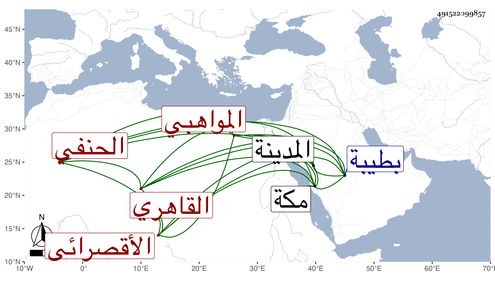

0902Sakhawi.DawLamic.ITO20230111-ara1.EIS1600.491522099857
Biography ID: 491522099857
إبراهيم بن محمود بن أحمد بن حسن أبو الطيب الأقصرائي الأصل القاهري الحنفي المواهبي الآتي ولده محمود ممن نسب نفسه كذلك للتلمذة لأبي المواهب ابن زغدان وقبله صحب الشيخ محمد بن عمر المعربي نزيل جامع كزلبغا وهو حنفي أخذ عن اينال باي الفقه وذكره لي المحب بن جرياش بما أعرضت عن ذكره وأن أباه كان من المقطعين وقد جاور بمكة غير مرة منها في سنة ثلاث وتسعين وزار المدينة النبوية أشهرا وانتمى إليه جماعة ووصفوه بالعارف وقد أرسل إلي بولده محمود في رجب سنة خمس وتسعين فعرض علي الأربعين للنووي والمجمع لابن الساعاتي ثم أنه جاور في سنة ثمان وتسعين وكان يقصدني بالسلام ويقول قد استجيبت دعوتكم في إجازة الولد بجمع الشمل بهذا الحرم الشريف ولم أر منه إلا الأدب والتواضع وأثنى عليه عندي القاضي خير الدين السخاوي قاضي المالكية بطيبة والله الموفق .
